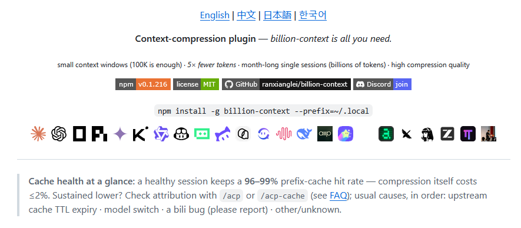
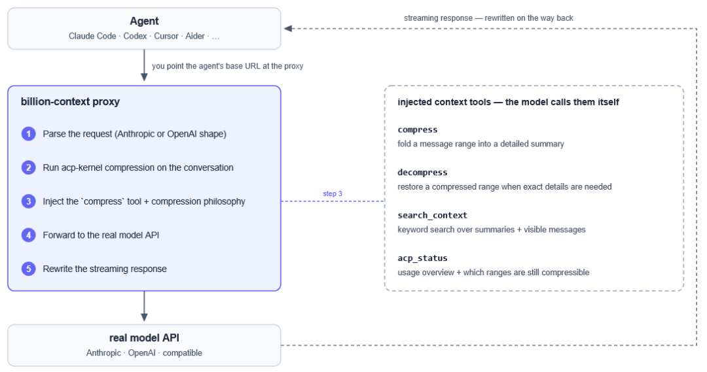
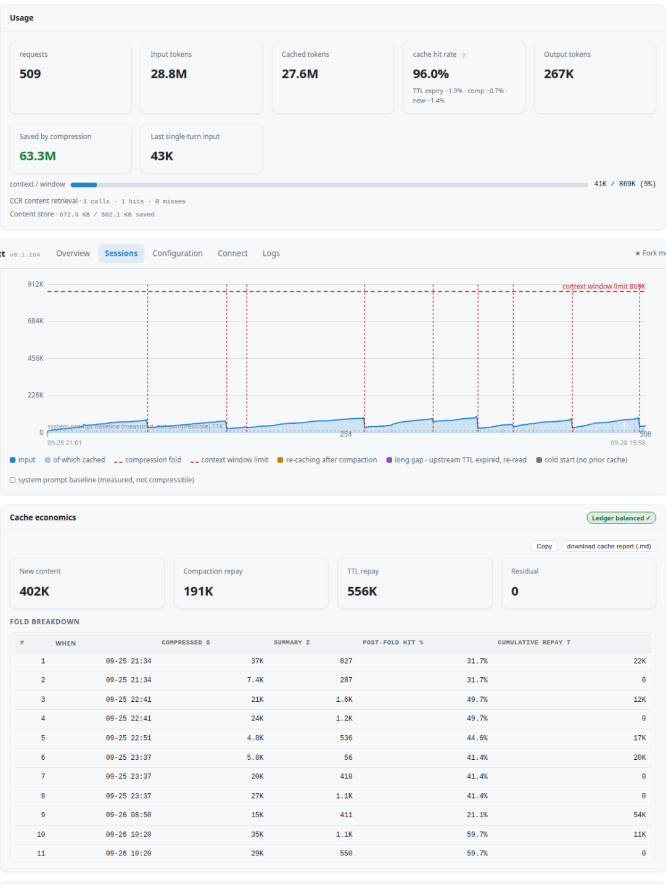

billion-context：让编码 Agent 会话连跑数月不崩的本地上下文折叠代理
用编码 Agent 的小伙伴迟早会撞上一个很具体的墙：会话越聊越长，上下文窗口就那么大，到了上限要么开新会话重新交代背景，要么看着它开始丢东西。模型能力不是瓶颈，窗口容量才是。
常见解法有两个方向。一个是换更大的窗口，成本直接上去；另一个是手动清理，把旧对话删掉或者总结一下，但这件事靠人做很累，而且删什么留什么全凭感觉。

billion-context 走的是第三条路：在客户端和模型 API 之间架一层本地代理，把已经“消费完”的对话增量折叠成摘要，让原本只能撑 100K 的窗口实际能装下大约五倍的 token 量。
它的目标是让一个会话能连续跑几个月、累计几十亿 token 而不崩。
它到底在做什么
原理一句话能说清：代理盯着对话流，把已经用完的部分压成摘要块，最近的大约 50K token 保持原样不动。需要精确细节时，模型可以调一个 decompress 工具把摘要还原出来。

这里有个很关键的设计选择：折叠发生在已经消费过的区域。前缀缓存依赖的是对话开头那段稳定不变的内容，只要不碰它，缓存命中率就不会掉。
项目给出的数据是健康会话的前缀缓存命中率稳定在 95% 到 97%，压缩本身的开销不超过 2%。
换句话说，它不是靠“删对话”来省 token，而是靠“把旧内容换一种更紧凑的表示”。信息没有丢，只是换了个存放方式。
三条接入路径，差别只在客户端要改多少
压缩能力在三条路径上完全一样，区别只是你愿意在客户端配置上动多少手脚。
原生插件最省事。bili plugin install <client> 把 billion-context 注册进客户端配置，之后照常启动就行，不需要额外命令、环境变量或者固定端口。
支持 pi、opencode、dsh、kimi、claude、codex 等一批客户端。想撤掉也是一条命令：bili plugin remove <client>，安装器会把改动前的配置快照到 .bili-bak。
启动器适合不想碰配置文件的人。bili pi、bili codex、bili claude 这种形式，一条命令同时拉起代理和客户端，真实配置文件从头到尾不被修改，退出即还原。
支持二十多个客户端，包括 gemini、qwen、aider、goose 这些不在原生插件名单里的。多开时每个会话用独立端口，从 18787 起，冲突自动加一跳，互不干扰。
baseURL 前缀是兜底方案。先跑 bili 启动代理，默认占 8787 端口，然后把客户端的模型 API 地址改成 http://localhost:8787/bili/https://api.openai.com/v1 这种形式。
完整上游地址嵌在路径里，代理不需要额外配置就知道往哪转发。不想用了，停掉代理、还原地址，流量立刻恢复直连。
一句话选：客户端在插件名单里就用第一种；想什么文件都不碰就用第二种；两边都不沾边再用第三种。
装的时候有个小细节
安装命令是：
npm install -g billion-context --prefix=~/.local
它把 bili 装到用户级前缀下，不碰 sudo，不改 npm 全局配置，以后自更新也不会撞权限。用 nvm 或 Homebrew 管 Node 的人，以及 Windows 用户，直接 npm install -g billion-context 就行。
装完的判断标准很简单：bili 出现在 PATH 里。如果提示找不到命令，把 export PATH="$HOME/.local/bin:$PATH" 加到 shell 配置里再重开终端。
怎么确认它真的在工作
装完不能只看“命令返回 0”就完事，得确认流量真的走了代理、压缩真的发生了。

先跑两个只读探针。__bili/health 看代理是否活着、上游地址对不对。__bili/stats 要在客户端发过真实请求之后再看，否则数字没意义。
然后从客户端发一条消息，盯日志 ~/.local/state/billion-context/bili.log。三个信号按顺序出现：每处理一个请求会打一行 processTurn，证明请求确实经过了代理。
会话增长后会出现 [acp-usage] 行，里面带当前轮的前缀缓存命中率；达到压缩条件时会出现 compress 事件，看到它才说明折叠真的发生了。
opencode 和 dsh 这类原生插件客户端还有面板捷径：输入 /acp 弹当前会话状态，/acp-cache 打印缓存命中率报告并给一个 Web UI 链接。
健康状态下，缓存命中率应该在 95% 到 97% 之间，压缩开销不超过 2%。如果开销超了，用 /acp-cache 的报告去定位是哪一段出了问题。
几个容易踩的坑
双重压缩。装完原生插件之后如果 token 账目异常、上下文行为诡异，多半是旧的进程内扩展还挂在配置里。检查客户端全局和项目级两份配置，项目级的旧扩展需要手动移除，安装器不管这一层。
压缩时机不由人决定。全程模型驱动，没有人工干预。注入的 compress、decompress、search_context、acp_status 四个工具由模型根据上下文增长自己调，另外还有大约 5 万 token 步长的增长提醒和输入超限时的预检兜底。
如果你习惯手动控制什么时候压缩，这套机制可能需要适应一下。
想彻底退出。原生插件用 bili plugin remove <client>；启动器、环境变量、/bili/ 前缀这三类只要停用，流量立即恢复直连。没有残留的钩子或者后台进程。
它适合谁
如果你的会话经常跑到上下文上限，又不想频繁开新会话重新交代背景，这层代理值得试。它不改变模型本身，也不要求你换客户端，装完之后行为跟平时一样，只是背后多了一层折叠。
但它的收益取决于你的会话长度。短会话、一次性任务，压缩还没来得及发生就结束了，装它意义不大。
真正能吃到这里面好处的是那种连续几天甚至几周、围绕同一个项目反复迭代的长会话。
另外一个需要自己权衡的点是：多了一层本地代理，就多了一个需要维护的组件。
虽然它设计得比较克制——不碰配置文件、退出即还原、未识别端点原样透传——但它毕竟在你的请求链路上。
对稳定性要求极高的场景，上线前最好在测试环境跑一段时间，确认日志和缓存命中率都正常，再放到日常使用的工作流里。
项目在 GitHub 上开源，文档里还有一份跑了 4.5 个月、17.4 万次模型调用、187.6 亿输入 token 的纵向研究论文，感兴趣的话可以顺着 README 里的链接往下看。
项目地址：https://github.com/ranxianglei/billion-context